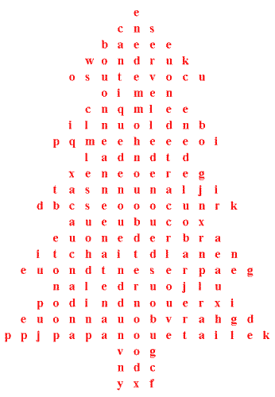

|  |
arbre dé Noué Bouan Noué! boule dé né bouonhomme dé né Bouonne Année! cantique dé Noué carte dé Noué dgèrrue dgi êtaile housse i' tchait d'la né Jour dé l'An Nouvel An Papa Noué picot podîn d'Noué présent d'Noué Sèrvelle dé Noué
|
Viyiz étout: